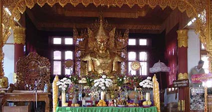
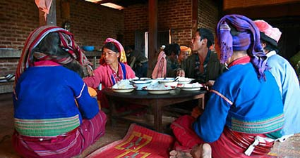
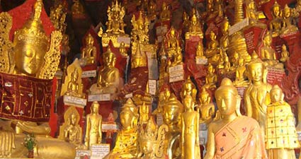
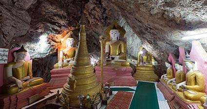

Stay > destination > We Recommend
Our Day Tour Packages Recommend:
Nee Paya (Bamboo strip lacquer Buddha Image)

It lies in Pinmagon Monastery of Pinmagon Village in Kalaw Township at the south of Shan State. It was estimated to have been established in First Inn-wa Period over 500 years ago. The donors were hard to determine and there were no records but its head was sharp upright, its ears were not touching the shoulders and the nether garment was covered for the whole of its lower parts. So it was believed to be historic. It is eight feet four inches high. It is noted for its longevity, its prevention of fire and its wish-granting powers. Occasionally radiation seemed to come from the pagoda at the front of image. The image is now lacquered and gilded all the way.
Palaung Village

It takes two hours (short way) or four hours through the hills to the village of the Palaung tribe. At first a steep track leads down into a narrow valley where the Palaung cultivate cheroot, tea, damsons and mangoes on the hill.
Shwe U Min Pagoda

An hour and a half's drive from Kalaw in southwestern Shan State, through a landscape of glowing red and yellow somewhat reminiscent of Tuscany, you will come to the cosy little town of Pindaya. From a distance, you can see the white covered walkways to the much venerated limestone Pindaya Caves, winding up the hill like giant snakes. It is possible either to climb the hundreds of steps on foot or take the lift, and once you are at the top you will be greeted by a breathtaking view of the hills opposite and of the town itself, with its artificial lake and the mighty banyan trees around it. According to the legend, four princesses were bathing in the nearby Boutalake Lake and were abducted by a giant spider, which kept them imprisoned in the cave. A bold prince killed the monster with a bow and arrows, rescued the princesses, and took the most beautiful of them as his wife.
At the entrance to the dripstone cave is the gilded Shwe U Min Pagoda, from which an elaborate network of caves and passengers extends deep into the heart of the hill. There are over 8,000 gilded statues of the Buddha, in all sizes and poses, made of wood, plaster, bronze and sandstone. Pilgrims and tourists alike stand awestruck before a statue. Most of the figures were probably made during the 18th century and were brought here by pilgrims. The oldest inscription is dated 1783.
At the entrance to the dripstone cave is the gilded Shwe U Min Pagoda, from which an elaborate network of caves and passengers extends deep into the heart of the hill. There are over 8,000 gilded statues of the Buddha, in all sizes and poses, made of wood, plaster, bronze and sandstone. Pilgrims and tourists alike stand awestruck before a statue. Most of the figures were probably made during the 18th century and were brought here by pilgrims. The oldest inscription is dated 1783.
Myin Ma Hti Cave

The winding complex of natural caves and tunnels is filled to bursting point with Buddha Images in an astonishing variety of shapes and sizes. The Myin Ma Hti cave is 1028ft (313m) long from the entrance.
Please reserve with our hotel tour team
More day tour packages
Local trekking activities
Vineyards tour
Elephant camp tour
Hot spring tour
Inle Lake tour
Vineyards tour
Elephant camp tour
Hot spring tour
Inle Lake tour
Kalaw At a Glance
Climate:
Summer: March - MayRaining Season: June - September
Winter: October - February
Clothing:
Light clothing is recommendedCurrency:
Kyats or USDCustoms & Duty:
For more information:www.myanmarcustoms.gov.mm
Electricity:
220 voltsEmergency Call Numbers:
Police - 199Mobile Phone Networks:
GSM, CDMA and WCDMAShopping & Business Hours:
10:00am to 9:00pmBank & Gov offices Opening Hours:
9:00am to 3:00pmTime Zone:
GMT +6:30Tipping:
Tipping is not a must in Myanmar but guests are welcome to offer tokens of appreciation for good services offered.VISA:
For more information, please visit:https://evisa.moip.gov.mm